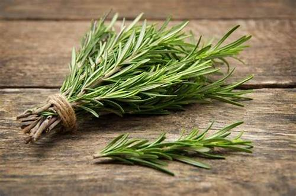
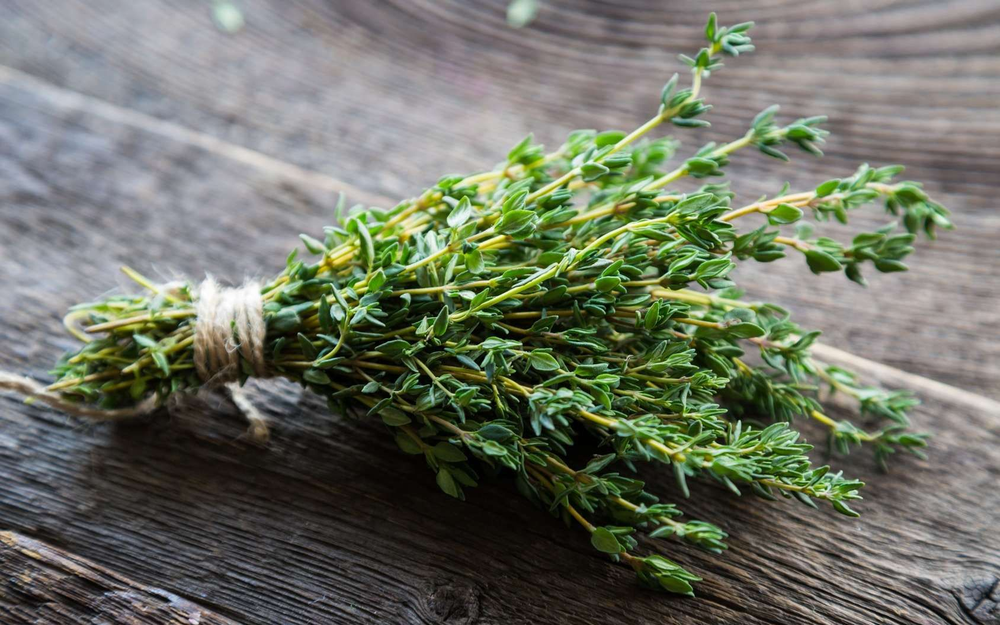

Bienfaits : Aide à la digestion, propriétés anti-inflammatoires et cicatrisantes.
Bienfaits : Hydrate la peau, soulage les troubles respiratoires et réduit les inflammations.
Bienfaits : Favorise le sommeil, réduit l'anxiété et soulage les douleurs légères.
Bienfaits : Anti-inflammatoire naturel, soulage les douleurs articulaires et les migraines.
Bienfaits : Apaise les irritations des yeux, hydrate la peau et réduit les inflammations.
Apaisante et relaxante, idéale pour le sommeil et le stress.
Calmante, elle aide à réduire l'anxiété et favorise la détente.
Connue pour ses propriétés anti-inflammatoires et cicatrisantes.
Elles ont des propriétés apaisantes et relaxantes, anti-inflammatoires et idéale pour la peau.
être un protecteur hépatique (foie) efficace notamment en cas de consommation excessive d’alcool.
limiter les maladies cardiovasculaires en agissant sur l’ hypertension
Un thé délicat préparé avec des fleurs de cerisier marinées.
Bienfaits :riches en antioxydants, elles favorisent la régénération de la peau et apaisent l'esprit grâce à leurs propriétés relaxantes.
Instructions : Rincez les fleurs pour enlever l'excès de sel, puis ajoutez-les à l'eau chaude. Laissez infuser 5 minutes et dégustez.
Une délicieuse friture légère à base de fleurs de glycine.
Bienfaits :Utilisées dans la médecine traditionnelle pour soulager les maux de tête légers et leur parfum est connu pour son effet apaisant.
Instructions : Mélangez la farine et l'eau gazeuse pour obtenir une pâte. Trempez les fleurs dedans et faites frire jusqu'à ce qu'elles soient dorées.


Bienfaits : Stimule la circulation sanguine, améliore la digestion et réduit la fatigue mentale.
Bienfaits : Renforce le système immunitaire, soulage les maux de gorge et améliore la digestion.
Bienfaits : Détoxifie le foie, riche en vitamines et favorise l’élimination des toxines.